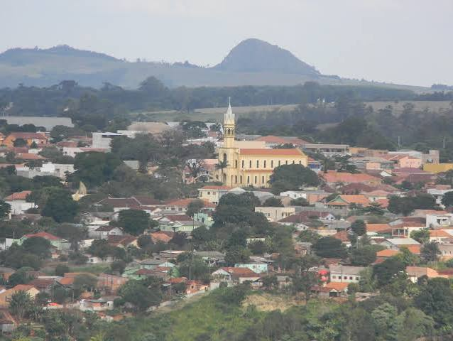
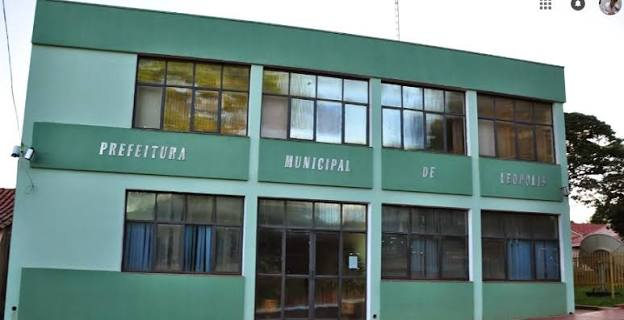

Sobre o Criador
Conheça quem está por trás do projeto.


Olá! Meu nome é Gustavo Henrique de Almeida, tenho 20 anos e sou natural de Congonhinhas - PR. Atualmente, atuo como Agente Administrativo no setor de licitações da Prefeitura de Leópolis, mas em breve retornarei para minha cidade natal, onde conquistei o 1º lugar no concurso público para o mesmo cargo.
Paralelamente à trajetória na administração pública, estou no 4º semestre de Engenharia de Software na UTFPR. Busco sempre alinhar organização e eficiência ao desenvolvimento tecnológico para criar soluções práticas.
O MultiWeb nasceu justamente dessa vontade de construir ferramentas funcionais, com uma interface limpa, concisa e sem poluição visual, para facilitar as pequenas tarefas do dia a dia.